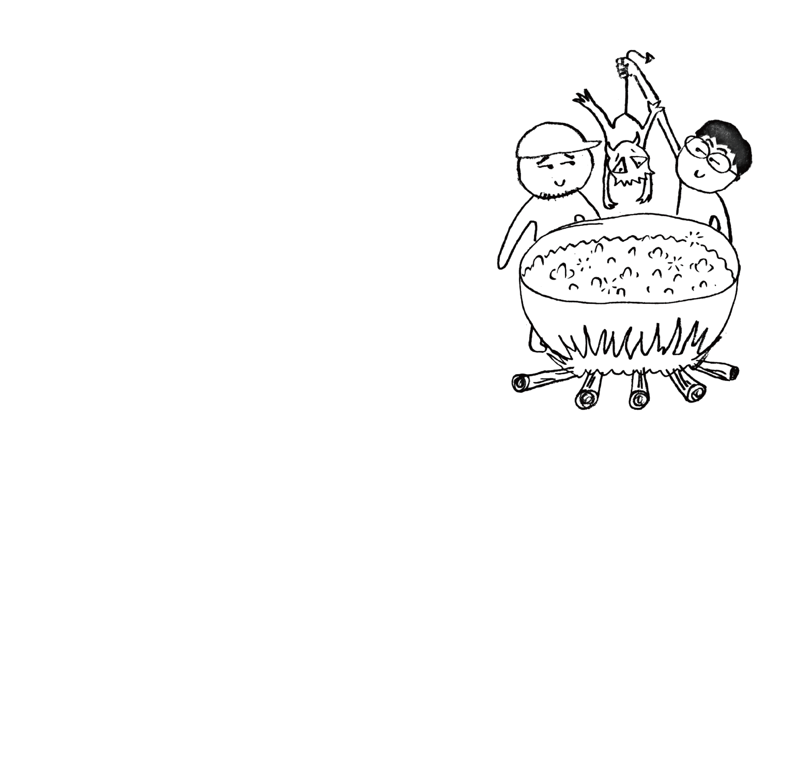

noo1
- 1. heat oil in a wok
- 2. ghost is laughing
- 3. from the hell
- 4. to
- 5. another hell
- 6. let's eat breakfast!
notes from Sun Yizhou:
thanks to neciak and Ziyi from nestled, and to 41, Yifan, and Konini. without them, this album could not have appeared as a complete work. along with my thanks, I'd like to add a few small production notes to this album. the order below has nothing to do with the content:
a. the phrase "from the hell to another hell" used for tracks 3, 4, and 5 is something Toshimaru Nakamura said before coming to veijing. It refers to the summer heat in beijing and tokyo (which, I believe, is also reflected in the music). thinking about it now, it can also be translated as "从地狱中来，到地狱中去。"
b. Toshimaru Nakamura came to veijing for You and Me Music Festival (2025), interestingly, we describe it as "hell week"
c. the recording's panning is arranged as an eai duo: most of my sound is on the left, most of his is on the right. After track 4, "to," the stereo positions are swapped.
d. the album title, "油炸鬼 (yóu zhá guǐ)", is the cantonese and minnan term for fried dough sticks. i came up with it during a tour in hong kong with Toshimaru Nakamura, Yan Jun, Makoto Oshiro, and Satoshi Yashiro (consider to the temperature there, that place is closer to hell). the literal english translation is a bit more interesting and a bit silly, which is exactly right. Please take it only literally. Also, this is dedicated to those who don't know what "油炸鬼" is: you are right.
e. track 6, "let's eat breakfast!" although we lived together for about a week, we never ate breakfast together.
Sun Yizhou: relays, feedbacks
Toshimaru Nakamura: no-input mixing board
all sounds by Sun Yizhou and Toshimaru Nakamura
recorded at aloe office, beijing summer, august 5, 2025
edited and mixed by Sun Yizhou
mastered by Toshimaru Nakamura
artwork: 41
cd label photo: Konini
design: Yifan

cd / digital
335g white card, six-panel digipack, limited to 150 copies